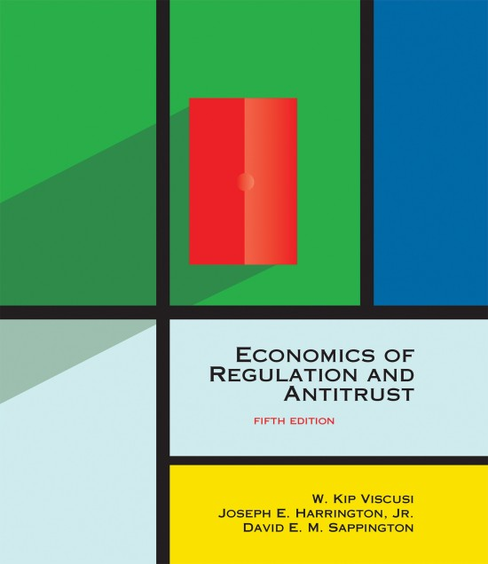

Economics of Regulation and Antitrust, 5th Edition, The MIT Press, 2018; co-authored with W. Kip Viscusi and David E. M. Sappington.
Game, Strategies, and Decision Making, 2nd ed., Worth Publishers, 2014
For suggestions on teaching game theory, see "Game Theory in a Liberal Arts Education," in International Handbook on Teaching and Learning Economics (Gail Hoyt and KimMarie McGoldrick, editors), 2012. PDF Copy
For suggestions on teaching game theory, see "Game Theory in a Liberal Arts Education," in International Handbook on Teaching and Learning Economics (Gail Hoyt and KimMarie McGoldrick, editors), 2012. PDF Copy
The Theory of Collusion and Competition Policy, 1st ed., The MIT Press, 2017
Hub-and-Spoke Cartels, The MIT Press, 2021